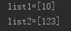
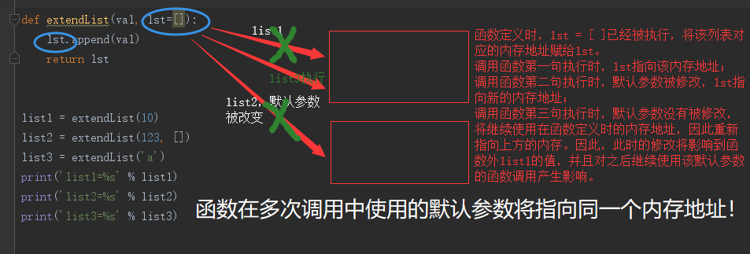

0|1陷阱？
学过函数的人一定听说过函数的默认参数，关于函数的默认参数，请看以下的例子：
def extendList(val, lst=[]):
lst.append(val)
return lst
list1 = extendList(10)
list2 = extendList(123, [])
print('list1 = %s' % list1)
print('list2 = %s' % list2)打印的结果是 现在，我们将代码再添加一处，来看看最后的结果是什么：
{kind=link}
def extendList(val, lst=[]):
lst.append(val)
return lst
list1 = extendList(10)
list2 = extendList(123, [])
list3 = extendList('a')
print('list1=%s' % list1)
print('list2=%s' % list2)
print('list3=%s' % list3)当list1处调用函数时，10被加入了列表；list2处调用函数，123被加入到了新传入的列表中；最后到list3调用函数，应该将‘a’继续加入到列表中返回。因此得到的输出应该是：
# list1 = [10]
# list2 = [233]
# list3 = ['a']0|1陷阱！
然而，实际的打印结果变成了：
{kind=link}
陷阱之所以称之为陷阱，代表我们不能以普通的思维来看待它，通过查阅资料，得到以下的一句解释：
A new list is created once when the function is defined, and the same list is used in each successive call.
在定义函数时，Python的默认参数会被计算一次，而不是每次调用函数时（比如Ruby）。这意味着如果你使用一个可变的默认参数并对其进行改变，那么你将会直接修改该对象，该影响将一直延续到未来关于该函数的调用（在默认参数没有被重新赋其他值的情况下）。
众所周知，Python变量存储的是变量和值的引用关系，即实际变量对应一个内存地址。这意味着Python函数总是通过地址传递（传递参数）工作。调用函数时，不会将参数值复制到函数占位符。相反，我们将占位符指向变量本身。这有一个非常重要的结果：我们可以从函数内部更改变量的值。

0|1如何避开陷阱？
None通常是一个不错的选择:
def extendList(val, lst = None):
if not lst:
lst = []
lst.append(val)
return lst有时您可以专门利用此陷阱来维护函数调用之间的状态。这通常在编写缓存函数时完成。
参考资料：https://docs.python-guide.org/writing/gotchas/
http://blog.thedigitalcatonline.com/blog/2015/02/11/default-arguments-in-python/